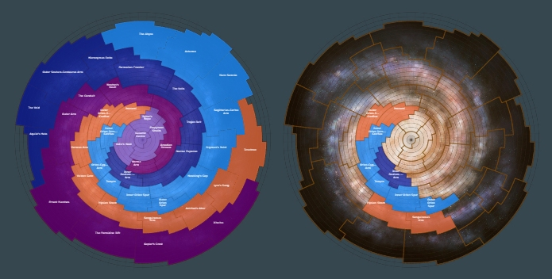

|  |  |  |  |
 |  |  |  |  |
 |  |  |  |  |
 |  |
An Odyssean Chaparral. Image: ‘Field of Surreal Wonders’ courtesy of Cmdr. Claudius Aetius. Used with permission.
All count and percentage figures in these entries and any extrapolation therefrom and subsequent speculations are from the Google Sheets recorded data to 30th September 3311. These data are not without quality issues and whilst efforts have been made to suppress erroneous records some will inevitably have slipped through and may be the root cause for some of the very low count or percentage ‘outliers’ in the data presented here.
It must also be said that, at the Species and Variant level certainly, there is nothing in this analysis that cannot be gleaned from the excellent Canonn Bioforge, or the data-enriched Codex Regions. This analysis serves as a précis or summary of the insights to be gained there.
Also, this analysis is very much open to question, challenge, enrichment or any other qualification. Such comments are welcomed.
NOTE:
Canonn collects codex data from composition scan events. These are sourced from the EDMC-Canonn plugin, the EDD Canonn plugin, the EDDN network and Journal Limpet. On a daily basis the Google Sheets are updated by combining the reported Codex data with the system and body information sourced from Spansh. The EDDN data comes from a number of sources and there may be some errors recording the body information so the body data does need to be verified before drawing absolute conclusions.
(Google Sheets population information supplied by LCU No Fool Like One)
There are 15 Genera in the Odyssey Family, each Genus having a number of Species and each Species having a number of recorded Variants as follows:
| Genus | # of Species | # of known Variants (Projected)1 | % of Recorded Biological Population | Change from last Quarter |
| Aleoida | 5 | 57 (65) | 3.31% | 0.14% |
| Bacteria | 13 | 105 (105) | 26.00% | -1.54% |
| Cactoida | 5 | 53 (96) | 3.88% | 0.13% |
| Clypeus | 3 | 27 (39) | 1.67% | 0.10% |
| Concha | 4 | 31 (32) | 4.94% | 0.15% |
| Electricae | 2 | 12 (12) | 0.78% | -0.01% |
| Fonticulua | 6 | 77 (90) | 6.39% | -0.38% |
| Frutexa | 7 | 60 (77) | 7.53% | 0.29% |
| Fumerola | 4 | 24 (24) | 0.66% | 0.02% |
| Fungoida | 4 | 24 (24) | 6.76% | 0.22% |
| Osseus | 6 | 41 (48) | 6.77% | 0.25% |
| Recepta | 3 | 26 (26) | 0.54% | 0.04% |
| Stratum | 8 | 67 (71)4 | 10.57% | -0.27% |
| Tubus | 5 | 57 (65) | 5.28% | 0.25% |
| Tussock | 15 | 124 (165) | 14.88% | 0.61% |
1 Evidence that each Species in a Genus will have the same number of Variants is, as yet, not fully conclusive, but it seems likely. The fact that projected Variants remain unrecorded may be due to the rarity of their spawning characteristics or that those characteristics may be mutually exclusive, in whole or in part.
2 Actually the percentage of recorded Odyssey Biological population. Due to the manner in which data are collected; aforementioned quality issues in logged data; the incentive of the pay out offered by Vista Genomics and the focus or goal of individual Commanders, these figures cannot be held to be fully representative of Genus rarity, but they may be considered indicative. There are, however, known (or strongly suspected) exceptions. For example Stratum Tectonicas, a high value, high distribution biological, which is farmed for credits and therefore recorded in greater quantity than is truly representative. For Bacteria, the opposite is true. Many Commanders ignore Bacteria because of the disparity in effort vs. reward, so the Bacteria relative percentage of galactic biological population should be significantly higher than what is recorded and, unfortunately, may be expected to continue dropping.
3 Direction of change in percentage of recorded Odyssey Biological population since last quarterly update
4 Curiously, only one Variant of Stratum Araneamus, namely Stratum Araneamus – Emerald, has yet been found across the entire explored Galaxy. As this Species has been scanned in what are probably representative numbers, it is assumed that no further Variants will be discovered.
As at 30th September 3311, and after data cleansing, 2,023,588 Biologicals had been recorded across the Galaxy.
At the Genus-level, all Genera have some representation, albeit sometimes very small, in every Region of the Galaxy. However, at the Species-level some Genera have Species that show a marked preference for, or absence from, certain Galactic Arms. This is in addition to their general characteristics for spawning as covered broadly in this section and further detailed in the individual Species posts.
The chance of any Genus or Species being present on the surface of a planetary body is determined by the combination of several factors: Planetary Body Type; Base Atmosphere; Temperature; Pressure; Gravity; Volcanism, and other variables as yet undetermined or unproven.
Interestingly, whilst Species within a Genus may overlap in their preference for, or tolerance of, certain of the above factors, no Species within a Genus has yet been found to co-exist with another.
The primary selection factors seem to be Planetary Body Type, Base Atmosphere and Temperature with the others acting as positive or negative qualifiers and/or as differentiators at the Species level. The tables below show the current recorded population (as at 30th September 3311 and after data cleansing) analysed across those three main factors:
Recorded Biologicals Count and Percentage of recorded Biological Population by Body Type and Base Atmosphere
| Base Atmosphere | ||||||||||
| Body Type | Ammonia | Argon | Carbon Dioxide | Helium | Methane | Neon | Nitrogen | Oxygen | Sulphur Dioxide | Water |
| High Metal Content World | 152,421 | 1,159 | 150,153 | 663 | 7,803 | 916 | 94,052 | 25,955 | ||
| 7.53% | 0.06% | 7.42% | 0.03% | 0.39% | 0.05% | 4.65% | 1.28% | |||
| Icy Body | 138 | 171,596 | 48 | 2,202 | 65,142 | 74,028 | 54,914 | 4,771 | 5,633 | 21 |
| 0.01% | 8.48% | 0.002% | 0.11% | 3.22% | 3.66% | 2.71% | 0.24% | 0.28% | 0.001% | |
| Rocky Body | 355,817 | 170 | 656,631 | 10,112 | 4,228 | 253 | 39,023 | 82,274 | ||
| 17.58% | 0.01% | 32.45% | 0.50% | 0.21% | 0.01% | 1.93% | 4.07% | |||
| Rocky Ice World | 225 | 52,091 | 6 | 1 | 2,755 | 835 | 4,202 | 1,089 | 2,216 | 45 |
| 0.01% | 2.57% | 0.0003% | 0.00005% | 0.14% | 0.04% | 0.21% | 0.05% | 0.11% | 0.002% | |
| Total | 508,601 | 225,016 | 806,838 | 2,203 | 78,672 | 74,863 | 71,147 | 7,029 | 140,924 | 108,295 |
| 25.13% | 11.12% | 39.87% | 0.11% | 3.89% | 3.70% | 3.52% | 0.35% | 6.96% | 5.35% |
Recorded Biologicals Count and Percentage of recorded Biological Population by Temperature Band
| Temperature Band | 0 to 50 | 051 to 100 | 101 to 150 | 151 to 200 | 201 to 250 | 251 to 300 | 301 to 350 | 351 to 400 | 401 to 450 | 451 to 500 | 501 to 550 | 551 to 600 | 601 to 650 |
| 73,572 | 324,202 | 69,237 | 1,339,935 | 51,639 | 21,285 | 22,033 | 10,488 | 110,524 | 661 | 7 | 2 | 3 | |
| 3.64% | 16.02% | 3.42% | 66.22% | 2.55% | 1.05% | 1.09% | 0.52% | 5.46% | 0.03% | 0.0003% | 0.0001% | 0.0001% |
At the Odyssey Family level then, one may deduce that the most likely combination whereon to find exobiological life is on a Rocky Body with a Carbon Dioxide Atmosphere in the Temperature range between 150 and 200 K.
However, such a generalisation ignores specific clear preferences demonstrated by the Genera and their Species – such as Electricae, which occur only on Icy Bodies with Argon (or negligibly Methane and Neon) Atmospheres and Temperatures below 150K ; or Recepta, whose 3 Species have a broader distribution across a wider Temperature range from 101 to 272 K; or Fungoida, which shows an almost equal preference for Ammonia as for Carbon Dioxide, but won’t be found on an Icy Body. These differences are explored in the separate Species posts linked below.
Additional Genus-level comparison tables can be found in Appendix B.
NOTE
Some of the very low figures above may be data anomalies or they may be genuine exceedingly rare intersections of determining factors, e.g. the highlighted 6 Rocky Ice Body Carbon Dioxide Atmosphere Biologicals (which are reportedly all Bacteria). Low values such as these need to be re-visited and re-verified.
Other anomalies and outliers exist, e.g. in Temperature, Pressure, Gravity etc., requiring similar re-verification. An analysis and report of these is planned at some future point.
Species within each Odyssey Biological Genus differentiate within any of shape, floral form, reproductive method, nutrient acquisition etc. However, variance within a Species is determined by one of two things: the Stellar Class of an in-system star1 or the presence of a specific Material in their planetary body’s crust. One of these determinants will drive the Variant, which will always exhibit as a change in colour.
Genera influenced by Stellar Class will always produce the same colour Variant within their member Species for a given Stellar Class. For example, if Stellar Class M evokes Frutexa Acus – Grey then that colour variance rule, M = Grey, will hold true for all other Species of Frutexa.
Only 15 Stellar Classes have so far been found to influence Variant colour:
Main Sequence Classes: O, B, A, F, G, K, M
Other Classes: L, T, TTS, Herbig Ae/Be, Y, Wolf-Rayet, White Dwarf, Neutron1
Genera where specific Material presence evokes a Variant do not demonstrate a similar cross-Genus Species effect. For example, for the Genus Electricae, Yttrium will evoke Mulberry in Pluma, but Green in Radialem; for the Genus Fungoida, Ruthenium will evoke Magenta in Bullarum but Gold in Setisis. However, Material influenced Variants will not always be different by Species; using Fungoida as an example again, Yttrium will evoke Orange in both Bullarum and Setisis.
Some Genera are wholly Stellar Class influenced for colour variance in their Species; some wholly Material influenced and some are split across both.
Genus and Variant Determinant
| Genus | Variant Determinant |
|---|---|
| Aleoida | Stellar Class |
| Bacteria | Stellar Class / Material |
| Cactoida | Stellar Class |
| Clypeus | Stellar Class |
| Concha | Stellar Class / Material |
| Electricae | Material |
| Fonticulua | Stellar Class |
| Frutexa | Stellar Class |
| Fumerola | Material |
| Fungoida | Material |
| Osseus | Stellar Class / Material |
| Recepta | Stellar Class / Material |
| Stratum | Stellar Class |
| Tubus | Stellar Class |
| Tussock | Stellar Class |
Stellar Class can readily be seen to be the more common – or perhaps more powerful – determinant, influencing variance as it does in approximately 70% of all Species.
A similar distribution is also found in the Variant colours produced, some being only produced by Stellar Class influence; some only by Material influence and some by both, as seen in the following table:
Variant Colours and Deterministic
| Abbreviation | Colour | Determinant |
|---|---|---|
| Am | Amethyst | Stellar Class |
| Aq | Aquamarine | Material |
| Bl | Blue | Material |
| Co | Cobalt | Material |
| Cy | Cyan | Material |
| Em | Emerald | Stellar Class / Material |
| Go | Gold | Material |
| Gr | Green | Stellar Class / Material |
| Gy | Blue | Stellar Class |
| In | Indigo | Stellar Class |
| Li | Lime | Stellar Class / Material |
| Mg | Magenta | Material |
| Mr | Maroon | Stellar Class |
| Mu | Mulberry | Material |
| Mv | Mauve | Stellar Class |
| Oc | Ocher | Stellar Class |
| Or | Orange | Stellar Class / Material |
| Pe | Peach | Material |
| Re | Red | Stellar Class / Material |
| Sg | Sage | Stellar Class |
| Te | Teal | Stellar Class |
| Tu | Turquoise | Stellar Class |
| Wh | White | Stellar Class |
| Ye | Yellow | Stellar Class / Material |
1 There are recorded cases where a Stellar Class dependent Species has spawned on a body where there is no in-system star of the ‘correct’ class for its apparent Variant or where there is an in-system Neutron star. This seems predominantly to affect F Stellar Cass dependent Variants. The exact pattern to which these anomalous Variants conform (if any) is yet to be fully understood. Incidentally, Stratum Araneamus – Emerald, noted above as being the sole recorded Variant of Stratum Araneamus is an F Stellar Class dependent Variant. It seems likely that certain Biologicals have an additional level (or levels) of Variant determinant yet to be… determined.
As noted above, some Genera have Species which display a preference for, or avoidance of, certain Galactic Arms. This can be seen by superimposing a map of the Galaxy over the Named Regions wherein a given Species is recorded.
However, the Named Regions of the Galaxy are artificial divisions imposed in order to facilitate communication, reference and analysis. Biologicals do not respect Region boundaries and whilst distinct patterns can be seen, there will always be some ‘leakage’ from Biological discoveries at Region boundaries. This ‘leakage’ can be compounded by errors in the scans which sometimes record a Biological in Region A when in fact it is in the adjacent Region B or effectively ‘on the border’.
The Named Region to Galactic Arm mapping used across these posts is detailed in Appendix A

| Colour | Galactic Central and Major Arms | Minor Arms |
|---|---|---|
| Light Purple | Galactic Central | Orion-Cygnus Arm |
| Light Blue | Sagittarius-Carina Arm | As can be seen, Orion-Cygnus overlaps the Major Galactic Arms Scutum-Centaurus, Sagittarius-Carina and Perseus. |
| Orange | Perseus Arm | It is included because certain Species have a preference for these Regions only and not the Major Arms. |
| Dark Purple | Outer Arm | |
| Dark Blue | Scutum-Centaurus Arm | |
| Galactic Central has been included as a separate grouping because the Major Arms ‘share’ Regions in respect of where they may be said to start. |
Note: In the Stellar Class / Variant tables within the below linked sections the following abbreviations are employed:
| Abbreviation | Ae | D | N | W |
| Stellar Class | Herbig Ae/Be | White Dwarf | Neutron | Wolf-Rayet |
| | | | |
| | | | |
| | | | |
| |